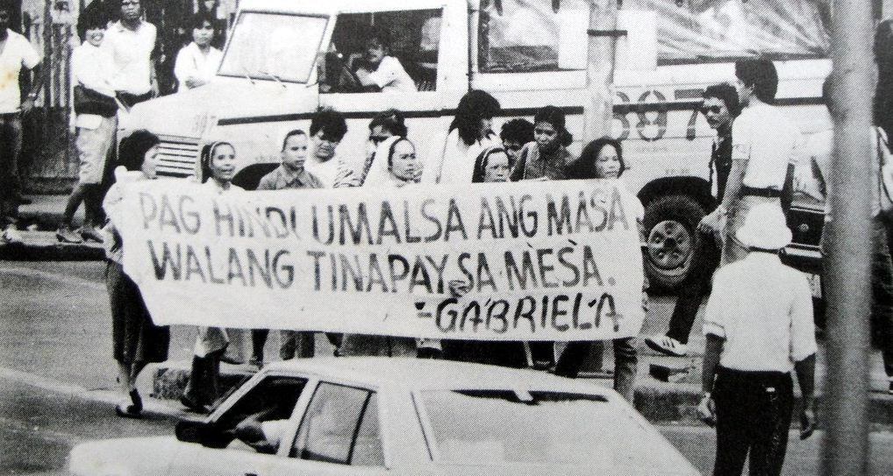

Martial Law
On September 21, 1972, the Philippines was proclaimed under the state of Martial Law by former President Ferdinand E. Marcos. Martial Law was verified under Proclamation No. 1081, confirming the rule of military authority over the civilians in the country.
When did it ended?
President Ferdinand E. Marcos rule the Philippines through power as Prime Minister. From 1969, 20 years after the tyrant rule in the country, the dictatorial power of Ferdinand Marcos diminished mainly because of the EDSA People Power. After Corazon Aquino was declared as president, that brought end to Marcos' power. He flew to Hawaii on 1986 leaving his wife and three children behind.
Why Martial Law happened?
Generally, according to the Philippine History Organization, it was mainly to establish the country towards what they call a 'New Society'. The purpose of it is not to make military power overtook the people's rights but to protect the national government and the people governed by it against communism. Given that during those times Muslim and Christian communists make threats and troubles to the country's welfare. Martial Law was affirmed to be able to keep peace and the well-being of the citizens. It is also to maintain control over people who were not following and obeying the laws issued by the government.
References:
Philippine History Organization (2017). The Philippines During Martial Law. Retrieved from http://www.philippine-history.org/martial-law-philippines.htm
What Philippines was like after Martial Law?
Approach any old Filipino citizen and interrogate him about Marcos regime. He probably may talk about the atrocities brought about by Marcos's reign, with all the abuses and deaths that dominated during his time.
Why did Martial Law happen?
Generally, according to the Philippine History Organization, it was mainly to establish the country towards what they call a 'New Society'. The purpose of it is not to make military power overtook the people's rights but to protect the national government and the people governed by it against communism.